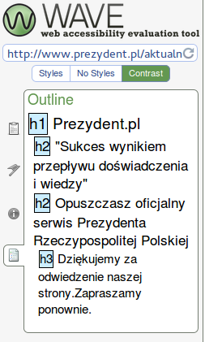
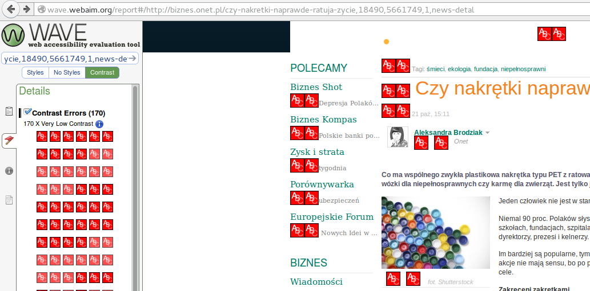
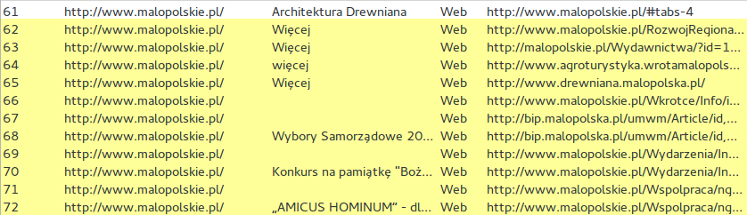
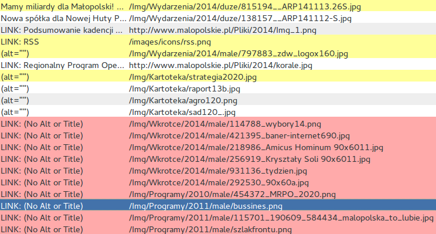
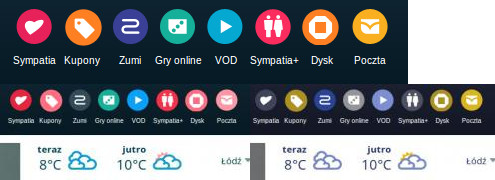
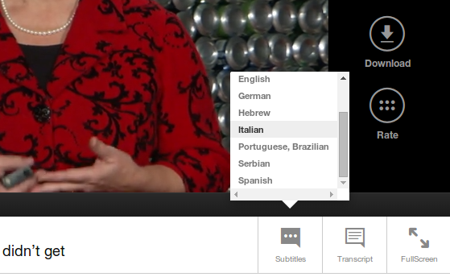
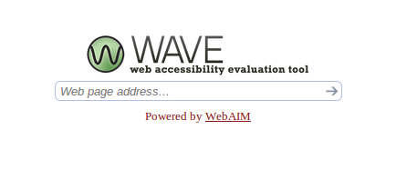
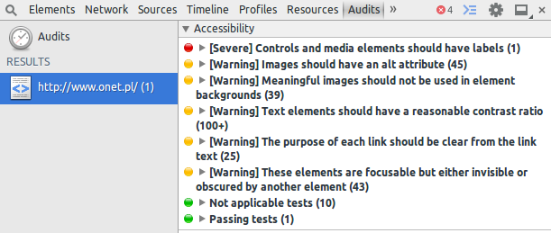

Czy Twoja strona jest dostępna dla wszystkich użytkowników?
Agnieszka Świecznik
Agenda
- Co to jest dostępność?
- Dlaczego powinniśmy o niej pamiętać?
- Jak sprawdzić czy strona jest dostępna?
Co to znaczy, że strona jest dostępna?
Każda osoba ma dostęp do wszystkich treści i może te treści zrozumieć
Każda osoba może wygodnie korzystać z nawigacji
Dlaczego to jest ważne?
Jedna osoba na 14 (7%) jest w pewnym stopniu niepełnosprawna
Źródło: niepelnosprawni.gov.plJakie rodzaje niepełnosprawności dominują?
Źródło: niepelnosprawni.gov.pl
Kto jest odpowiedzialny za dostępność strony?
TY :)
A przede wszystkim: programista, grafik, frontendowiec, marketingowiec i redaktor
Jak?
Dostępna jest cała seria prostych narzędzi i testów:
- W3C validator
- Accessibility Developer Tools do Google Chrome
- WAVE
- Web Developer Toolbar
- Accessibility Evaluation Toolbar
Zaburzenia wzroku
- Osoby niewidome
- Osoby niedowidzące i z wadami wzroku
- Niedowidzenie sytuacyjne
Absolutne minimum
- Brak elementów flash
- Teksty alternatywne do obrazów
- Opisane linki
- Duży, czytelny font o wysokim kontraście (14px, kontrast 7:1)
- Możliwość powiększenia strony za pomocą [Ctrl] + [+/-]
- Każda podstrona ma tytuł
- Każda sekcja na stronie ma swój nagłówek
- Użycie elementów HTML zgodnie z ich przeznaczeniem
- Dobrze opisane etykiety do wszystkich pól formularza
Jak powinny wyglądać nagłówki?
Nie tak :)
Jak wygląda dobry kontrast?
Nie tak :)
Jak wyglądają dobrze umieszczone linki?
Nie tak :)
Jak wyglądają dobrze umieszczone obrazy?
Nie tak :)
Jak strona wygląda dla osób z zaburzeniami widzenia barw?
Osoby niesłyszące
- Napisy do treści multimedialnych
- Tłumaczenia na język migowy
- Prosty zrozumiały język - dla części osób język polski jest językiem obcym!
Słyszący użytkownicy czasem nie mają możliwości odsłuchania materiału audio (np. w głośnym pociągu)
Portal CNET zaobserwował 30% wzrost wejść z Google po dodaniu transktypcji do materiałów multimedialnych
Żródło: http://www.w3.org/WAI/bcase/resourcesPrzykład
Niesłyszący użytkownicy nie mają żadnego dostępu do głównych treści portalu tvn24
Lepszy przykład
Użytkownicy portalu ted.com mają możliwość włączenia napisów lub przeczytania transkrypcji z prezentacji.
Osoby niepełnosprawne ruchowo
- Użytkownicy klawiatury
- Użytkownicy urządzeń wskazujących
- Użytkownicy posługujący się klawiaturą i myszką
- Użytkownicy sterujący komputerem za pomocą głosu
Zaawansowani użytkownicy komputerów, użytkownicy laptopów i użytkownicy infokiosków również często nie mają możliwości użycia myszki - możliwość wypełnienia formularza bez odrywania rąk od klawiatury zdecydowanie ułatwia korzystanie ze strony tym użytkownikom
Jak sprawdzić?
Sprawdź, czy naciskając na stronie klawisz [Tab] da się:
- przejść do jakiejkolwiek podstrony w menu
- skorzystać z wyszukiwarki
- przejść do linku w treści strony lub w stopce
- przyciski na stronie, np. w formularzach są wybieralne
- wartości w dropdownach są wybieralne
- przejść do innych zakładek
Upewnij się, że we wszystkie linki i przyciski są wystarczająco duże, że można w nie z łatwością trafić myszką.
Inne cechy utrudniające korzystanie ze stron internetowych
- Zaburzenia poznawcze i niesprawność intelektualna - dysleksja, autyzm, osoby po udarze mózgu
- Padaczka fotogenna
Jak napisać tekst dostępny dla wszystkich?
- Krótkie i zrozumiałe zdania
- Używaj słów i skrótów, zrozumiałych dla wszystkich
- Wyjaśniaj trudniejsze słowa i rozwijaj skróty
- Pisz zgodnie z zasadani gramatyki, interpunkcji i ortografii
- Używaj wypunktowań, tabel, nagłówków, pogrubień
- Dziel tekst na krótkie, sensownie wydzielone akapity
- Grafiki i zdjęcia powinny pomagać w rozumieniu tekstu
- Wyrównuj tekst do lewej strony
Narzędzia - WAVE
Narzędzia - Accessibility Evaluation Toolbar (Firefox)

Google Accessibility Developer Tools
Podsumowując
- Dostępność strony zależy od każdego z nas
- Można ją bardzo łatwo sprawdzić
- Nie jest kosztowna, jeśli tylko będzie się o niej pamiętać od samego początku
- Ułatwia dostęp wszystkim użytkownikom
- Ma bardzo duży wpływ na pozycjonowanie strony w wyszukiwarkach
Dziękuję!
Źródła: